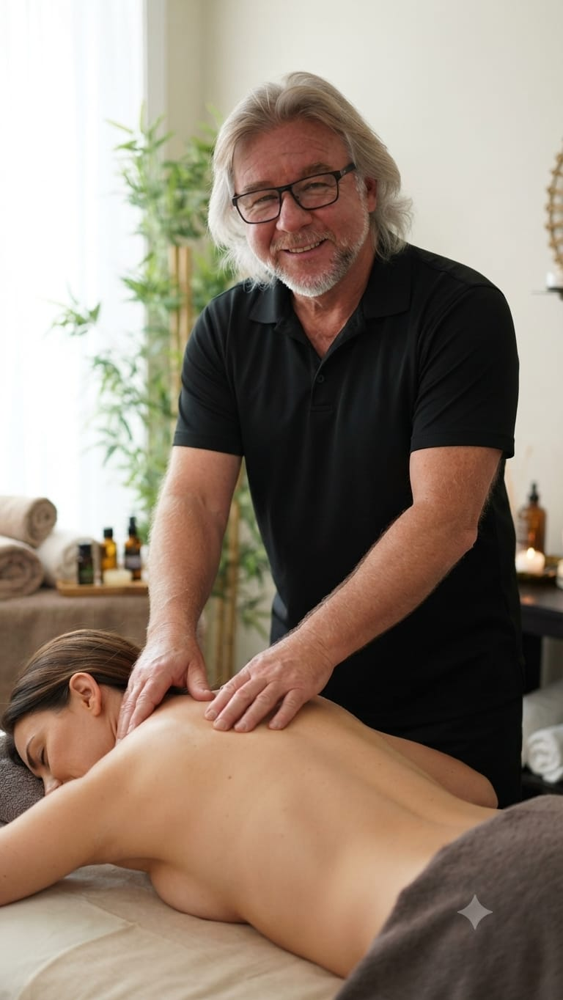

Звільніться від хронічного болю, напруги та стресу. Авторські техніки, лімфодренаж, спортивний масаж, унікальна баночна терапія та спеціалізована допомога для трак-драйверів.

Експерт з міофасціального та баночного масажу
Досвідчений професіонал із глибоким розумінням анатомії людини. Маю офіційні українські дипломи та сертифікати. Допомагаю людям позбутися болю в спині, відновитися після физичних навантажень та тривалого сидіння за кермом завдяки перевіреним авторським та класичним методикам.
Професійні сертифікати та дипломи з України, постійне вдосконалення технік масажу.
Підбір техніки під особливості вашого організму, стану м'язів та щоденного навантаження.
Ефективна робота з тригерними точками, затисками та глибокими шарами м'язів.
Оберіть те, що потрібно вашому тілу для повної гармонії та здоров'я
Стимуляція лімфотоку, зняття набряків, виведення токсинів та покращення загального тонусу організму.
Інтенсивне відновлення після тренувань, розігрів м'язів, збільшення гнучкості та попередження травм.
Корекція проблемних зон, покращення структури шкіри, стимуляція обмінних процесів у підшкірній клітковині.
Загальне зміцнення тіла, зняття спазмів з утомлених м'язів спини, шиї та попереку.
Глибоке психоемоційне розслаблення, зняття стресу, тривожності та відновлення душевного спокою.
Професійне ставлення банок та вакуумна терапія для потужного міофасціального розслаблення.
Це давня та надзвичайно ефективна техніка глибокого опрацювання м'язів і фасцій. Ставлення банок покращує мікроциркуляцію крові, знімає застійні явища у тканинах, прискорює регенерацію та дарує неймовірне полегшення у спині вже після першого сеансу.
Знімає глибокі хронічні м'язові затиски та тригерні болі.
Стимулює обмін речовин та прискорює виведення токсинів.
Індивідуальний підбір вакууму та стерильні матеріали для комфортного та безпечного сеансу.
ЗаписатисяБагато годин за кермом трак-драйву викликають хронічне навантаження на шийний відділ, поперек та плечі. Наша команда розробла цільовий комплекс технік для зняття затисків та повного відновлення спини у водіїв далеких рейсів.
Робота водія вантажівки пов'язана з постійним статичним навантаженням. Організм потребує професійного догляду, щоб уникнути міжхребцевих гриж та хронічного стомлення. Ми знаємо, як повернути вашому тілу легкість та свободу рухів.
Зв'яжіться зручним для вас способом